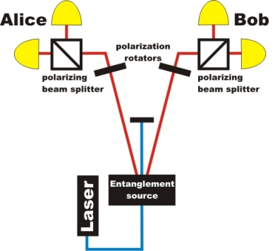

Entangled photons
Overview
Entanglement is a fascinating feature of quantum physics. Albert Einstein pointed out that the theory of quantum physics contradicts our conventional conception of reality [Ein35] and later called the behaviour of entangled quantum objects a spooky action at a distance. Entangled photon pairs and other entangled quantum objects are today routinely investigated in laboratories. Entangled photons are not only fundamentally interesting, but also useful for applications such as quatum cryptography [Urs07].
Experiments with single events:
1) What is entanglement?
2) How are entangled photons measured?
3) Can entanglement be explained with common sense?
Experiments with continuous data flow (advanced level)
A) How are entangled photons measured?
B) Generation of entangled photon pairs
C) Bell states
D) Prove of non-locality

Setup for experiments with entangled photons:
two detectors at Alice´s and Bob´s side
Experiments supported by: